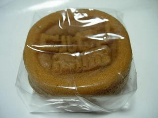
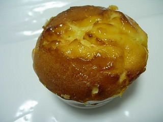
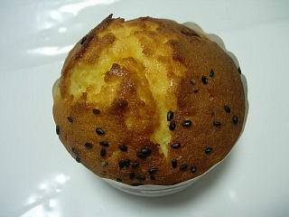

ヒルゼン高原センターとジョイフルパーク
2009/06/07
同じ場所にある施設ですが、ヒルゼン高原センターはレストランとお土産物のお店で、ジョイフルパークが遊園地なんですね。今まで違いがよくわかっていませんでした。
6月で天気もあまり良くなかったせいか、ジョイフルパークは空いてました。なのでアトラクションで順番待ちはほとんど無かったです。
園内はそんなに広くなく、その中にアトラクションが色々詰め込んであるので、移動時間が少なくて楽でした。こっちが終わったら次はこっちと、次々と乗り物に乗れて快適でした。フリーパスを購入した方がいいですね。
ヒルゼン高原センターでは、名物のジンギスカンを食べました。ジンギスカンをやってるお店が色々あったので、何処に行こうかと迷ったんですが、便利がいいのでここに決めました。ご飯やスープがセットにないですが、サラダバーが付いてました。名物や、お土産品の試食をちょっと食べていたので、サラダぐらいの量が丁度良かったです。

ヒルゼン高原センターで製造販売していたヒルゼン高原饅頭です。
機械がお饅頭を作ってる様子が見れて面白かったです。どこにでもありそうなお饅頭ですが、作ってる所を見ちゃうと記念に買いやすいですね。

ジャージ牛乳で作った名物のマフィンです。これはミルクチーズマフィンです。
見た目どうりしっとりとしていて、味が濃いめで、甘かったです。お菓子らしくて美味しかったです。下はさつまいものマフィンです。

他にもお土産品が沢山販売していて見ていて面白かったです。